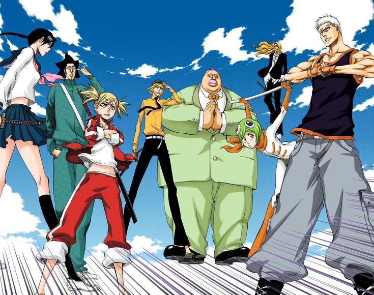
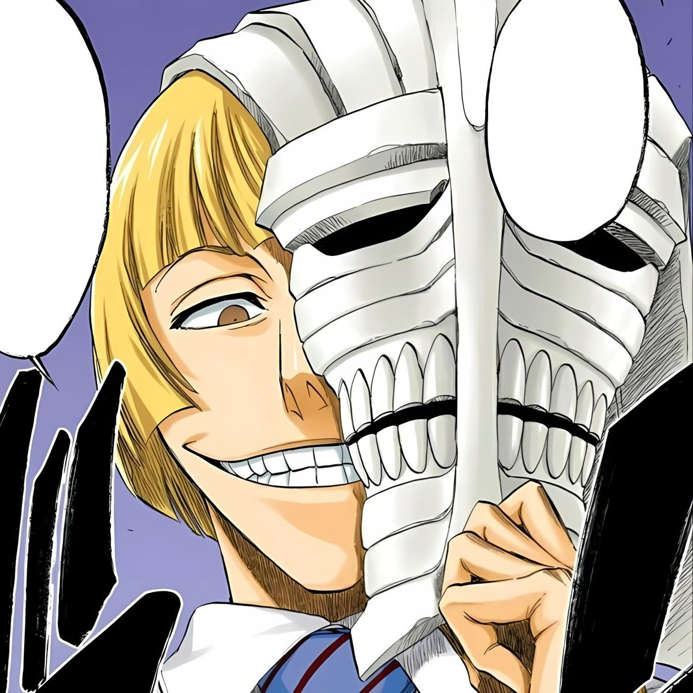
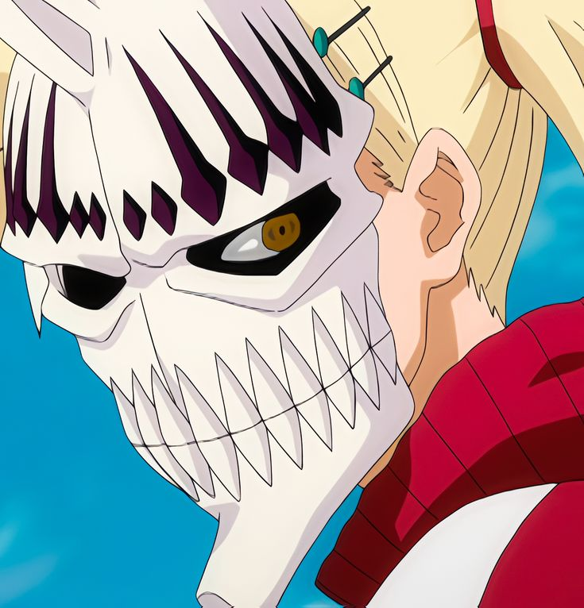
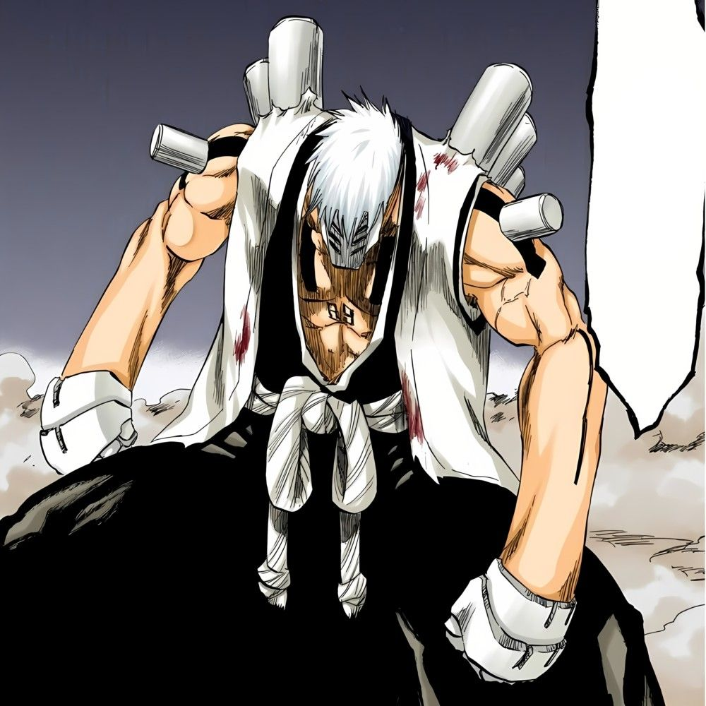
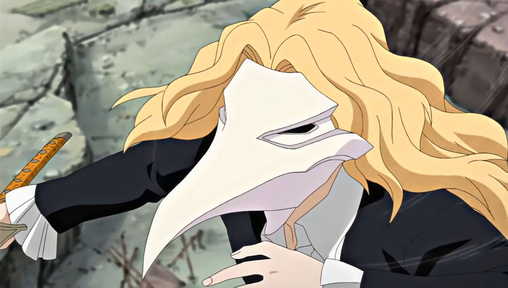
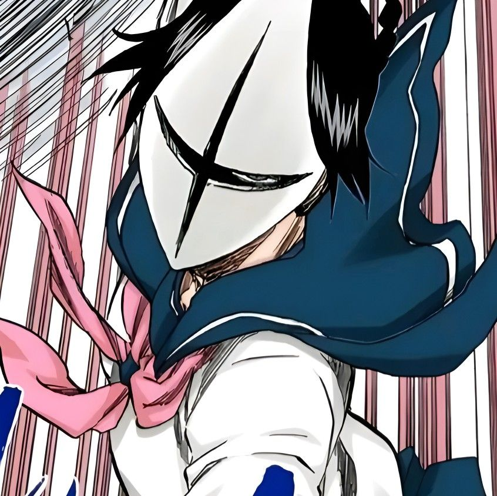
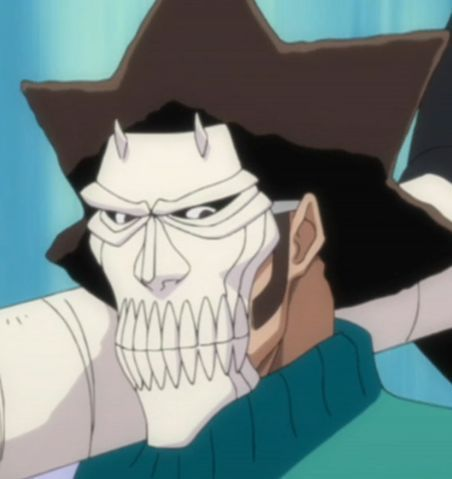
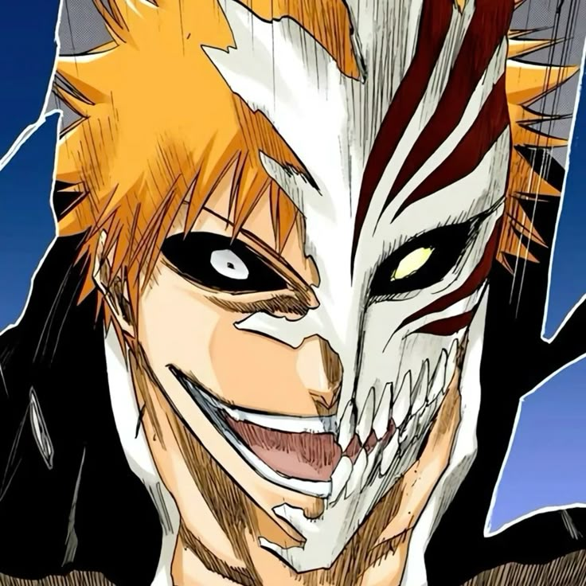

Bleach
Vizards (Visored) en Bleach
En Bleach, los Vizards son Shinigamis que obtuvieron poderes de Hollow sin perder su identidad, creando una mezcla peligrosisima entre disciplina espiritual y monstruosidad interna. Son una de las ideas mas interesantes de la serie porque rompen la frontera entre dos mundos que parecian opuestos.
Volver a BleachGuia general
Shinigamis que aprendieron a convivir con su monstruo interior
Los Vizards no son simplemente Shinigamis con una mejora de poder. Son personajes que han pasado por un proceso traumatico de hollowficacion, sobrevivieron a algo que debia destruirlos y convirtieron esa maldicion en una herramienta de combate. Por eso su presencia en Bleach siempre se siente distinta: no encajan del todo ni con la Soul Society ni con los Hollows.
Su simbolo mas reconocible es la mascara Hollow, una manifestacion externa de ese poder interior que aumenta su fuerza, velocidad y reiatsu de forma bestial. Pero lo realmente importante es que la serie los usa para hablar de control, identidad y rechazo, temas que tambien definen el viaje de Ichigo.
- Son Shinigamis que desarrollaron poderes Hollow manteniendo su conciencia.
- Muchos fueron antiguos capitanes o tenientes del Gotei 13.
- Su relacion con Ichigo es clave porque el comparte una inestabilidad parecida, aunque por un camino distinto.
Concepto base
Idea central
Shinigamis + Hollow interno = Vizard

Un Vizard es un Shinigami que ha sido alterado por energia Hollow hasta desarrollar mascara, instintos mas salvajes y tecnicas hibridas. La gran diferencia frente a un Hollow normal es que no pierde del todo su identidad: aprende a dominar esa corrupcion y a usarla en combate, algo que exige voluntad, entrenamiento y una estabilidad mental enorme.
- De que van: representan la mezcla mas inestable entre orden Shinigami y agresividad Hollow.
- Clave visual: la mascara no es decoracion, es la prueba de que el Hollow interior esta siendo controlado.
- Importancia: cambian la escala del conflicto al demostrar que las fronteras espirituales de Bleach se pueden romper.
De donde salen los Vizards
Su origen esta ligado a uno de los experimentos mas sucios de Sosuke Aizen. Antes de convertirse en exiliados, muchos de ellos eran miembros importantes del Gotei 13, incluidos capitanes y tenientes. Fueron contaminados con energia Hollow y, en lugar de morir o transformarse por completo en monstruos, desarrollaron una forma hibrida extremadamente rara.
Ese incidente destruyo su posicion dentro de la Soul Society y tambien dejo claro que Aizen ya llevaba muchisimo tiempo jugando con limites biologicos y espirituales. Urahara y Tessai fueron piezas clave para evitar que perdieran la razon del todo, y eso explica por que el grupo queda tan marcado por la traicion y el destierro.
- Fueron victimas directas de los experimentos clandestinos de Aizen.
- Muchos pasaron de ser autoridades del Gotei 13 a marginados escondidos en el mundo humano.
- Su mera existencia demuestra que la hollowficacion puede ser contenida si se domina a tiempo.
Que pueden hacer
Ventajas de combate
Poderes hibridos de altisimo nivel

La mascara Hollow es su recurso mas reconocible, pero no el unico. Un Vizard combina espada, kido, velocidad, experiencia de capitan o teniente y un aumento brutal de presion espiritual al activar la mascara. Algunos incluso pueden mantener Bankai y mascara al mismo tiempo, lo que los coloca en una zona de poder muy por encima de un Shinigami convencional.
- Mascara Hollow: sube fuerza, velocidad, reflejos y reiatsu de forma inmediata.
- Tecnicas mixtas: pueden mezclar habilidades Shinigami con recursos mas agresivos y salvajes.
- Resistencia: aguantan castigo espiritual enorme por su naturaleza alterada.
- Limite: si pierden el control del Hollow interior, el riesgo de convertirse en monstruos reales sigue ahi.
Lider natural del grupo
Figura principal
Shinji Hirako
Shinji es el rostro mas representativo de los Vizards. Antes fue capitan del Gotei 13 y despues del desastre se convierte en el lider mas natural del grupo, no solo por fuerza sino por cabeza. Su forma de hablar puede parecer relajada, pero lee muy bien a sus rivales y siempre da la sensacion de estar varios pasos por delante.
- Zanpakuto: Sakanade invierte la percepcion del enemigo y hace que el combate se vuelva una pesadilla mental.
- Mascara: la controla con gran estabilidad, mostrando uno de los mejores equilibrios del grupo.
- Rol narrativo: actua como puente entre el pasado de la Soul Society, la traicion de Aizen y el crecimiento de Ichigo.
Miembros principales
Hiyori Sarugaki
Furia y velocidadDe que va: ex teniente impulsiva, agresiva y con una energia caotica constante.
Poder: mascara Hollow muy rapida, gran movilidad y un estilo de combate salvaje.
Rasgo: su agresividad la vuelve una de las personalidades mas explosivas de todo el grupo.

Kensei Muguruma
Golpe directo y brutalidad tecnicaDe que va: capitan serio, duro y especializado en combate fisico.
Poder: Bankai de impacto explosivo y mascara Hollow que multiplica su pegada.
Rasgo: encarna la cara mas contundente de los Vizards: menos teatro, mas presion frontal.

Rose
Arte, musica y enganoDe que va: capitan refinado que convierte el combate en una puesta en escena.
Poder: tecnicas sonoras e ilusiones musicales amplificadas por la mascara.
Rasgo: demuestra que un Vizard no tiene que ser salvaje para ser peligrosisimo.

Lisa Yadomaru
Calma, precision y aguanteDe que va: ex teniente con una personalidad mas fria y contenida que la del resto.
Poder: combate cuerpo a cuerpo muy solido y mascara que mejora velocidad y presion.
Rasgo: transmite estabilidad, algo valiosisimo en un grupo marcado por el desequilibrio interno.

Love Aikawa
Fuerza bruta con estilo relajadoDe que va: capitan desenfadado que parece despreocupado hasta que entra en combate.
Poder: gran fuerza fisica, arma enorme y potencia ampliada por la mascara Hollow.
Rasgo: su actitud tranquila choca con la contundencia bestial de su estilo de pelea.

Ichigo Kurosaki
El caso mas importante e inestableDe que va: no pertenece realmente al grupo original, pero es el Vizard mas decisivo de la serie.
Poder: mascara parcial o completa, Getsuga Tensho potenciado y una mezcla unica de Shinigami, Hollow y Quincy.
Rasgo: su Hollow interno no es una simple mejora, sino uno de los grandes ejes de su identidad.
Ichigo y el Vizard incompleto
Caso especial
La mezcla mas rara de todo Bleach
Ichigo comparte con los Vizards el conflicto de tener un Hollow dentro, pero su caso va muchisimo mas lejos. No es solo un Shinigami contaminado: es una fusion unica de herencias espirituales que lo vuelve imposible de encajar en una sola categoria. Por eso, aunque aprende de los Vizards a controlar su mascara, nunca deja de ser una anomalia propia.
- Su mascara potencia tecnicas como Getsuga Tensho y acelera radicalmente su combate.
- Su Hollow interno evoluciona como una entidad propia y amenaza con devorarlo si pierde el control.
- Es el mejor ejemplo de que Bleach usa el poder hibrido como reflejo de una identidad fracturada.
Entrenamiento Vizard
Control mental y espiritual
Dominar al Hollow antes de que te devore
Controlar la hollowficacion no es como aprender una tecnica nueva. Implica enfrentarse a una parte bestial y destructiva de uno mismo. Si el usuario pierde ese pulso interno, puede terminar convertido en un monstruo sin razon. Por eso los Vizards no solo entrenan espada y reiatsu: entrenan estabilidad, dominio y tiempo de uso de la mascara.
- El control del tiempo de mascara es una medida clara de dominio.
- La voluntad del usuario importa tanto como su poder bruto.
- Ichigo sufre este proceso de forma mucho mas violenta que los demas.
Diferencias importantes
- Shinigami normal: usa poder espiritual puro, zanpakuto y tecnica disciplinada.
- Hollow: se mueve por instinto, hambre y destruccion, con una identidad muy degradada.
- Vizard: combina ambos mundos y mantiene control consciente del monstruo interior.
- Arrancar: se acerca al otro lado del espejo, un Hollow que gana rasgos de Shinigami.
Relacion con Aizen
Aizen no solo esta conectado a los Vizards: es el responsable directo de su existencia tal y como la conocemos. Los convirtio en sujetos de prueba y les robo su vida anterior dentro del Gotei 13. Por eso, cuando la guerra contra los Arrancar escala, los Vizards no son simples aliados circunstanciales: son supervivientes que vuelven para ajustar cuentas con el hombre que rompio su mundo.
- Aizen experimento con la frontera Shinigami-Hollow mucho antes de revelar sus planes.
- Los Vizards son una prueba viviente de que el Hogyoku y la hollowficacion podian cambiar el equilibrio entero.
- Su enfrentamiento con los Arrancar tiene tambien una lectura de venganza y recuperacion de dignidad.
Por que importan tanto en Bleach
- Explican que la mezcla de razas espirituales no es una excepcion exclusiva de Ichigo.
- Dan contexto a la crueldad y vision cientifica de Aizen antes de Hueco Mundo.
- Anaden un grupo con estetica propia, mascaras muy iconicas y un tono mas rebelde que la Soul Society.
- Ayudan a ampliar el universo de Bleach mostrando que el sistema espiritual tiene grietas por todas partes.
Curiosidades
- Ichigo es el caso mas raro, porque su naturaleza hibrida va mucho mas alla de la de un Vizard comun.
- Shinji es el mas tactico del grupo, y su zanpakuto convierte el combate en puro desconcierto mental.
- Hiyori es de las mas agresivas, algo que encaja perfectamente con el peligro de una hollowficacion mal contenida.
- Varios pueden usar Bankai y mascara a la vez, lo que explica por que su techo de poder es tan alto.
- Pasaron de ser autoridades a exiliados, y eso les da un papel muy distinto al del resto de facciones.